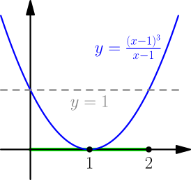
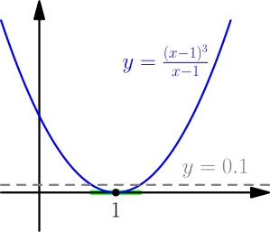
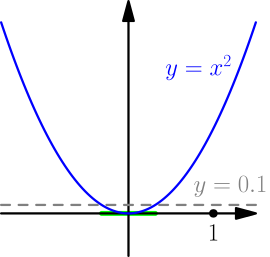
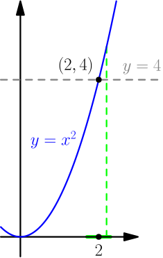
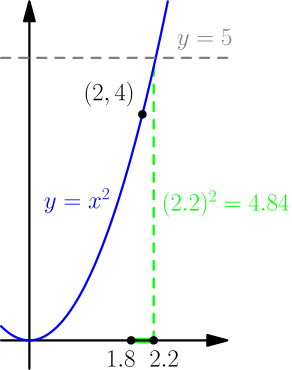

Definition of Limit¶
So far, we have "defined" limits by plugging in nearby numbers. There were several problems with this approach. On this page we fix them by defining limits precisely.
Close enough to¶
Before defining limits, we define what "close enough to" means in this context. This concept will simplify the definition of limit a lot.
An open interval is denoted with $(a,b)$, where $a < b$, and it means all numbers strictly between $a$ and $b$. For example, "$x$ is in the interval $(4,5)$" means same as $4 < x < 5$.
We say that an open interval is centered around $a$ if it's $(a-r, a+r)$ with some $r > 0$. For example, $(4,5)$ is centered around $4.5$. Here $r$ is sometimes called the radius of the interval.
The saying "$x$ is close enough to $a$" means same as "$x$ is in some open interval centered around $a$ and $x \ne a$".
Examples:
-
We have $\frac{(x-1)^3}{x-1} < 1$ on the interval $(0, 2)$ (marked in green),
except at its center $1$ where the function divides by zero.
Therefore we can say that $\frac{(x-1)^3}{x-1} < 1$ when $x$ is close enough to $1$.

-
We also have $\frac{(x-1)^3}{x-1} < 0.1$ when $x$ is close enough to 1.
(We could calculate what exactly the interval centered around 1 is,
but it's not important.)

-
We have $0 < x^2 < 0.1$ when $x$ is close enough to zero.
The $0 < x^2$ part is false when $x=0$, because then it says $0 < 0$.
However, this doesn't matter,
because the center $0$ is ignored in the definition of "close enough to".

- We have $x^2 < 0.1$ when $x$ is close enough to zero. This also happens to work when $x=0$, but it doesn't matter, because $x=0$ is ignored anyway.
-
We do not have $x^2 < 4$ when $x$ is close enough to 2.
This is because $x^2 > 4$ whenever $x > 2$,
and any interval centered around 2 will contain numbers greater than 2.

-
We have $x^2 < 5$ when $x$ is close enough to 2.
For example, the interval $(1.8, 2.2)$ works,
because the values will be smaller than $(2.2)^2 = 4.84$.

$\approx$ with precision¶
Let $a$ and $b$ be any numbers, and let $p$ be a positive number. We say that $a \approx b$ with precision $p$, if $b-p < a < b+p$. For example, $x \approx 3$ with precision $0.1$ means that $2.9 < x < 3.1$.
This is similar to the "close enough to" concept, but not quite the same. Specifically, "$x$ is close enough to $a$" means that $x \approx a$ with some precision, but also requires $x \ne a$.
The Definition¶
On the previous page, we noticed that $$ \lim_{x \to 1} \frac{x^3-1}{x-1} = 3 $$ by plugging in numbers like this:
| $x$ | $\frac{x^3-1}{x-1}$ |
|---|---|
| $1$ | undefined |
| $1.1$ | $3.31000\dots$ |
| $1.01$ | $3.03010\dots$ |
| $1.001$ | $3.00300\dots$ |
| $1.0001$ | $3.00030\dots$ |
| $1.00001$ | $3.00003\dots$ |
| $0.9$ | $2.71000\dots$ |
| $0.99$ | $2.97010\dots$ |
| $0.999$ | $2.99700\dots$ |
| $0.9999$ | $2.99970\dots$ |
| $0.99999$ | $2.99997\dots$ |
The resulting values are approximately 3, but let's be more specific by specifying how close to 3 the values are.
Limit means that we can choose any precision we want, no matter how small. For example, we have $\frac{x^3-1}{x-1} \approx 3$ with precision $0.01$ (that is, $2.99 < \frac{x^3-1}{x-1} < 3.01$), if $x$ is close enough to 1. The point is that we can use any precision we want, such as $0.00000000001$.
We say that the function $f$ has limit $L$ as $x$ approaches $a$ and we write $$ \lim_{x \to a} f(x) = L, $$ if for any precision $p > 0$, we have $f(x) \approx L$ with precision $p$ when $x$ is close enough to $a$.
Because we defined precisely what "$\approx$ with precision" and "close enough to" mean, there's nothing vague in this definition, so it's possible to write convincing proofs and derivations based on it.
Simple example: limit of $x$¶
We prove that $\lim_{x \to 3} x = 3$.
Let $p > 0$ be any precision. We want to show that $x \approx 3$ with precision $p$ when $x$ is close enough to $3$.
This is quite easy. Consider the interval $(3-p, 3+p)$. If $x$ is close enough to $3$, it is in $(3-p, 3+p)$, and $x \ne 3$. This means that $3-p < x < 3+p$, so we have $x \approx 3$ with precision $p$. (We didn't need $x \ne 3$ for anything.)
We have $\lim_{x \to 3} x = 3$.
Of course, there's nothing special about the number 3. The same works with any other number.
For any number $a$, we have $\lim_{x \to a} x = a$.
Even simpler example: limit of a constant¶
We have $\lim_{x \to 3} 5 = 5$, because $5 \approx 5$ with any precision, regardless of what $x$ is.
We have $\lim_{x \to 3} 5 = 5$.
More generally, for all numbers $a$ and $b$, we have $\lim_{x \to a} b = b$.